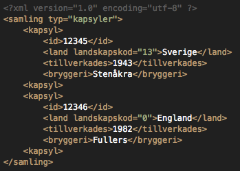
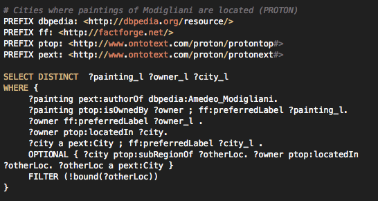

Webbteknik II, 1dv449
Linnéuniversitetet, Ht 2013
Web Science
Dagens agenda
- Vad är web science?
- Varför behövs web science?
- Problem inom web science
- Web of data
- Webbskrapning
- Semantiska webben
- Web mining
Vad är Web Science?
cc by Paul Downey:
http://www.flickr.com/photos/psd/

Foto cc by Clare Hooper:
http://www.clarehooper.net/blog/2012/06/dissecting-the-butterfly/websci-heatmap/

Vilka problem studeras inom WS
- Webbteknologier
-
- Webbens arkitektur
- Protokoll, standarder
- Länkad data, semantiska webben
- Web AI
- Analysera webben
-
- Web of data
- Big Data
- Open Data
- Web Mining
- Webbens roll i samhället
-
- Communitys
- Integiritet, etik
- Sociala aspekter
- Ekonomi, affärsinformation
- Lagar, myndigheter
Foto cc by Emilian Robert Vicol: http://www.flickr.com/photos/free-stock/

WS i denna kurs
Foto cc by Emilian Robert Vicol: http://www.flickr.com/photos/free-stock/
Webben som datalagring
Webben är mänsklighetens största artifakt.
All kunskap samlad, fri möjlighet att söka den
Foto cc by Cory Doctorow:
http://www.flickr.com/photos/doctorow/

Hur kan vi hämta information från webben och använda, kombinera, dra nya slutsatser m.m.om detta
Webbskrapning
Copy & paste
Foto cc by Esther Vargas:
http://www.flickr.com/photos/esthervargasc/

Text, reguljära uttryck, grep

Screendump from:
http://stackoverflow.com/questions/1732348/regex-match-open-tags-except-xhtml-self-contained-tags/1732454#1732454
Antag jag samlar kapsyler...
Foto cc by Joe Holst:
hhttp://www.flickr.com/photos/jyoseph/

Webbläsaren behandlar HTML som DOM
DOM-hantering
getElementById m.m.
Stökigt
HTML as XML as XHTML
Tydliga regler, noder, attribut, språkstöd
XPath - Adressera noder
Kan vi vara säkra på att HTML följer XML-regler
Vad säher HTML5-standarden
Webbläsaren behandlar HTML som DOM
DOM-hantering
getElementById m.m.
Stökigt
Ska det vara så krångligt?
API, MASHUP o.s.v.
Antag jag samlar kapsyler...
Foto cc by Joe Holst:
hhttp://www.flickr.com/photos/jyoseph/
Efter ett tag...
Foto cc by:
http://www.flickr.com/photos/rothar/

Dokument

CC BY 3.0, John Häggerud

Screendump from:
http://www.bottlecaps.de/
Hur hittar man en speciell kapsyl?
Sökmotorer FTW!

En mängd med länkade dokument har indexerats
på nykelord.
Hur hittar jag en röd kapsyl gjord av ett smålänskt bryggeri gjord under andra världskriget?
- Röd stuga från småland från andra världskriget
- Röda havet
- Smålands röda bröders ölfest
- Andra röda kapsyler
Som människa kan man ju filtrera och söka vidare på ett intelligent sätt
Vi måste beskriva data på ett strukturerat sätt så
att applikationer kan förstå och automatisera sökningen på ett intelligentare sätt
Struktur via sammankopplade databaser
- En databas med kapsyler
- En databas med bryggerier
- En databas med färger
- Wikipedias databas
Länkad data (linked data)
Utmaningen!
Länka samman olika typer av data och skapa relationer mellan
dessa så att applikationer kan göra intelligentare operationer.
Komma överens om struktur och hur data ska beskrivas. Vart datan lagras är
ointressant.
Semantiska webben
Om applikationer förstår meningen bakom informationen,
kan de lära sig vad vi är intresserade av
och hjälpa oss att enklare hitta vad vi vill
Mindre tid att leta efter saker, mindre tid att filtrera bort saker, mindre tid att förklara för datorn vad vi vill
W3C standard
XML. RDF, OWL, SPARQL, RDFa, SKOS, RDFS,
GRDDL, POWDER, PROV, RIF, SAWSDL, RDB2RDF
XML vs. HTML
<p>58</p>
Webbläsaren vet att den ska rendera ut 58 som ett stycke
Men vad betyder 58? 58 vadå? Hur ska en applikation veta detta?
XML - eXtensible Markup Language

XML är gjort för att märka upp data och för att vara ett dataformat för webben
RDF - Resource Description Framework
Beskriver relationen mellan "saker"

SPARQL
Om standarderna kring semantiska webben
skapar relationer. Hur kan vi då ställa frågor
mot all data?

 Denna presentation är licensierat under en
Creative Commons Erkännande 3.0 Unported Licens.
Denna presentation är licensierat under en
Creative Commons Erkännande 3.0 Unported Licens.